model1 <- lm(ExistentialWellBeing ~ OpenMindedness + Conscientiousness +
Extraversion + Agreeableness + NegativeEmotionality, data = big5)
big5$resid <- resid(model1)
big5$pred <- predict(model1)Regression Diagnostics
Introduction
In this lesson we will cover regression diagnostics. Linear regression is a great tool for providing inference into the world from observations of data. However, it requires certain conditions to be true about the data in order for the estimates and inference to be optimal and valid. These conditions are “assumed” to be true whenever you use regression. If it turns out they are not true, there will be flaws in the model and its ability to provide sound interpretations and inference.
We are interested in the degree to which existential well being can be predicted by the Big 5 personality traits. In order to make sure the inference and interpretations of this model are valid, we will check the diagnostics for each assumption.
The Dataset
The dataset is Big5data.csv. We will be predicting ExistentialWellBeing from the five Big 5 personality traits.
ExistentialWellBeing— how well would you rate your existential well being (1–5 scale)OpenMindedness— how open minded you are (1–5 scale)Conscientiousness— how conscientious you are (1–5 scale)Extraversion— how extroverted you are (1–5 scale)Agreeableness— how agreeable you are (1–5 scale)NegativeEmotionality— how neurotic you are (1–5 scale)
For the record, I was given this dataset when I was making this lab. I don’t think these are necessarily the best variables to demonstrate good and poor model fit, so keep that in mind since most of these assumptions will not be violated. In my lab I simply showed pictures of differen diagnostic plots that did show violations. I would recommend doing this if you need to apply this knowledge to real data.
Saving Residuals and Predicted Values
The majority of diagnostics checks come from using residuals and/or predicted scores along with the predictors. So you will need to save these.
1. Assumptions of Regression
Assumptions
In order of “most important” to “least important”, the main assumptions of linear regression are:
- Linearity: Linear relationship between X’s and Y. Necessary for meaningful coefficients that describe a linear relationship.
- Homoskedasticity: Consistent variance of the Y residuals. Needed for valid standard errors to get valid inference.
- Normality: Y residuals are normally distributed. Needed for inference to be valid. This is arguably not that important as regression is relatively robust against this violation.
- Independence: Each case is independent from other cases. Not really necessary most of the time.
A golden rule is that violations of these assumptions, if they exist, are usually pretty obvious. Small deviations of each are likely to occur, but if true violations are present, they will be pretty evident.
But please please plesae check these before you make any important conclusions of your model. You don’t want to run a social experiment and take the results for granted because they could be very wrong.
If you fail to uphold these assumptions, the model will still work, but the results will be wrong It will essentially hallucinate nonsense that it will act like is a valid answer
2. Linearity Assumption
Linearity Assumption
To check this assumption, one needs to plot the predicted scores of the model against the residuals. What you want to see is if the distribution of the residuals has a mean of 0. If this does not seem to be the case, it means that the linear line did not fit the data particularly well. The closer the data can be fit with a straight line, the more the residuals will be centered around 0.
ggplot(data = big5, mapping = aes(x = pred, y = resid)) +
geom_point()
From this plot, there is no clear non-linearity as the residuals are generally centered around 0.
You can do this check with the predictors too. This is largely to determine where non-linearity is coming from if there is true non-linearity.
ggplot(data = big5, mapping = aes(x = OpenMindedness, y = resid)) +
geom_point()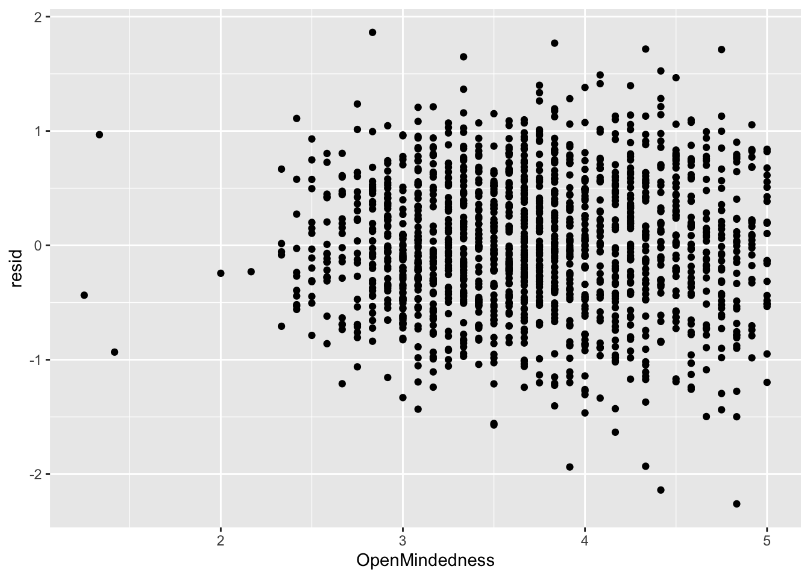
ggplot(data = big5, mapping = aes(x = Conscientiousness, y = resid)) +
geom_point()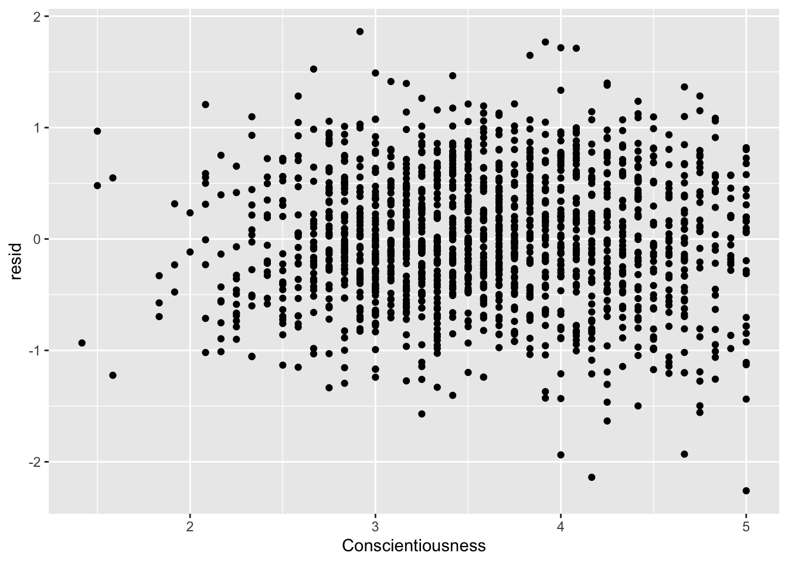
ggplot(data = big5, mapping = aes(x = Extraversion, y = resid)) +
geom_point()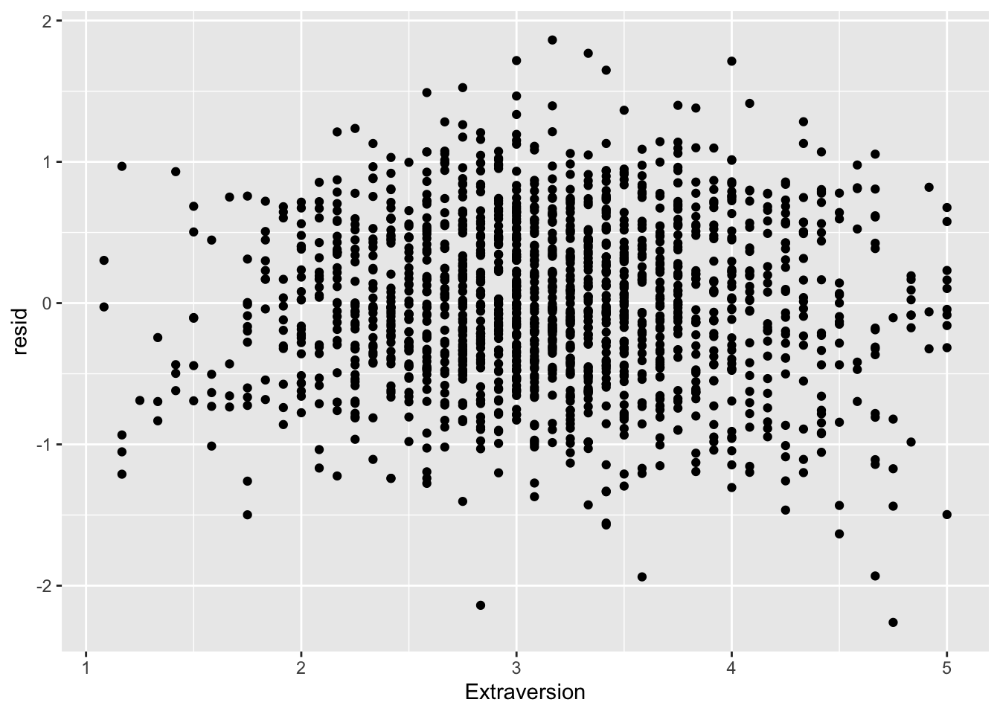
ggplot(data = big5, mapping = aes(x = Agreeableness, y = resid)) +
geom_point()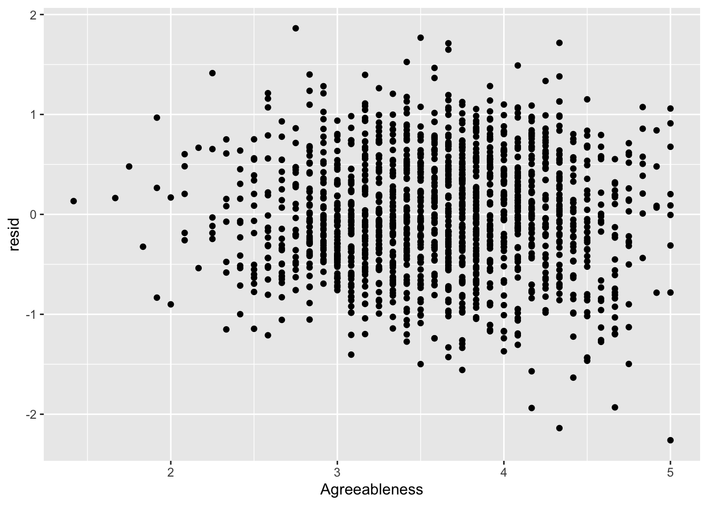
ggplot(data = big5, mapping = aes(x = NegativeEmotionality, y = resid)) +
geom_point()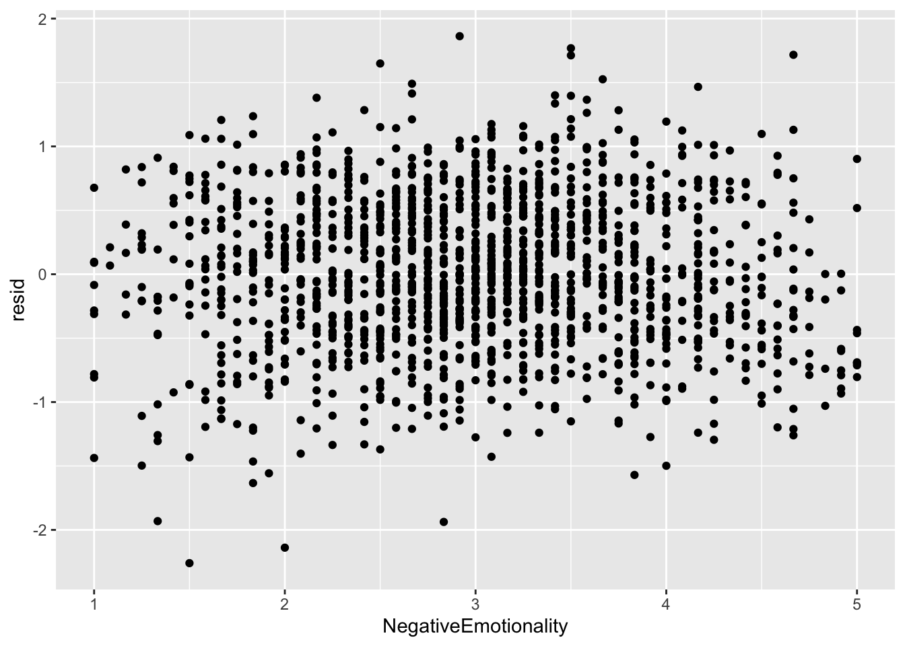
None of the predictors really have the residuals deviating away from 0. This is to be expected since there was no non-linearity in the residual vs predicted score plot.
Linearity Violation
If you do violate linearity, there is not much you can do with your model. You will have to fit some kind of non-linear model instead, of which there are multiple options that we will cover in the future.
3. Homoskedasticity Assumption
Homoskedasticity Assumption
This assumption (sometimes called homogeneity) is about the residuals having a constant variance across all values. Let us say you have an outcome that ranges from 1-10. Heteroskedasticity might mean the variation of your predicted scores could be very consistent on the upper end for scores 8, 9, and 10, but on the lower end of 1, 2, and 3, your model might become very inconsistent with its predictions. You want the consistency to be constant for your inference from the model to be valid.
Heteroskedasticity distorts the standard errors of the coefficients, which will lead to distortions of anything that relies on the standard errors (test statistics, p values, confidence intervals, etc.). There are many causes of heteroskedasticity including cluster-dependency, ceiling/flooring effects, or just having a poorly fit model in general.
Plotting Homoskedasticity
Inference on homoskedasticity is most commonly done in residual vs predicted score plots. What you need to look for is any deviations from constant variance of the points across the X axis.
ggplot(data = big5, mapping = aes(x = pred, y = resid)) +
geom_point()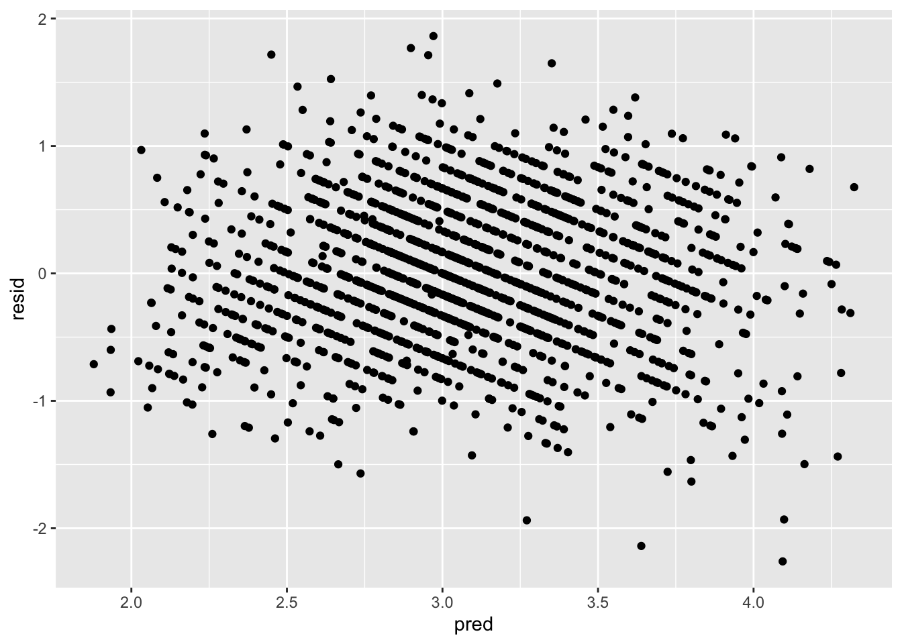
There seems to be a bit of heteroskedasticity, as the left side of the plot is much more tight than the right side of the plot. However, this is probably very minor and negligeable. Heteroskedasticity tends to be very obvious when it manifests. I would look up heteroskedastic plot examples if you are curious, as there are many. I would say the assumption upholds.
If you violate homoskedasticity, there are a few options. You can use robust standard errors, bootstrapped standard errors, or weighted least squares (WLS) regression. We will cover the first two options. WLS is usually out of grasp for psychological research since it requires you to be able to describe the exact form of the error variance. Robust and bootstrapped standard errors are more commonly used because they do not require specifying a variance model and still provide valid inference under heteroskedasticity.
Robust Standard Errors
Robust standard errors are adjustments to the standard error formulas of the coefficients that account for heteroskedasticity. They are so easy to apply and have virtually no downsides if applied to any model, that many researchers actually suggest applying them universally (I’ve seen people mocked online for not applying them in case social shaming might motivate you). The only downside is if the data is truly homoskedastic, your coefficient t tests will be less powerful (less able to detect a true effect), but this downside is usually minimal.
There are many types of robust standard errors: HC0, HC1, HC2, HC3. “HC” comes from “heteroskedastic consistent.” Each has its uses, but generally, for regular linear regression, it is typical to use HC2 standard errors.
Note that robust standard errors will NOT change the coefficients, only their standard errors. So applying robust standard errors will change inference but it will not change interpretations.
Robust Standard Errors with vcovHC() and coeftest()
Use the vcovHC() function from the sandwich package in conjunction with the coeftest() function from the lmtest package. Specify that you are using "HC2" robust standard errors in the vcov = line.
coeftest(model1, vcov = vcovHC(model1, type = "HC2"))
t test of coefficients:
Estimate Std. Error t value Pr(>|t|)
(Intercept) 3.5580044 0.1716387 20.7296 < 2.2e-16 ***
OpenMindedness -0.0066773 0.0258250 -0.2586 0.796009
Conscientiousness 0.1185543 0.0274975 4.3115 1.724e-05 ***
Extraversion 0.0411957 0.0268297 1.5355 0.124878
Agreeableness 0.0882630 0.0300130 2.9408 0.003322 **
NegativeEmotionality -0.4413082 0.0226734 -19.4637 < 2.2e-16 ***
---
Signif. codes: 0 '***' 0.001 '**' 0.01 '*' 0.05 '.' 0.1 ' ' 1As you can see, the estimates did not change, but the standard errors changed, along with the t statistics and p values. The standard errors with the robust standard error adjustments will ALWAYS be larger than non-robust standard errors. The larger the change of the standard errors before and after applying the HC2 correction, the more of a deal heteroskedasticity was for the model. The changes we observe are minimal and there are no changes to the inferential conclusions, which aligns with what we observed visually.
If you want adjusted confidence intervals with the HC2 standard errors, use coefci() from lmtest.
coefci(model1, vcov. = vcovHC(model1, type = "HC2")) 2.5 % 97.5 %
(Intercept) 3.22133478 3.89467405
OpenMindedness -0.05733306 0.04397845
Conscientiousness 0.06461795 0.17249061
Extraversion -0.01143083 0.09382220
Agreeableness 0.02939247 0.14713362
NegativeEmotionality -0.48578214 -0.39683422The resulting intervals are “robust” to heteroskedasticity.
Bootstrapped Standard Errors
Another form of standard error correction is the bootstrapped standard error. Unlike robust standard errors, bootstrapped standard errors are built by repeatedly resampling your data (with replacement), refitting the model many times, and looking at how much the estimated coefficients vary across those samples. Instead of relying on assumptions about the residual distribution, bootstrapping uses the data itself to approximate the sampling variability of the estimates.
The logic is as follows. You assume that your data is representative of the population. Given this assumption, you can pretend that your sample IS the population. Then you can take repeated sub-samples of the original sample to make inferences about your original sample by generating a sampling distribution.
Recall that a sampling distribution is a distribution of many samples. The standard deviation of the sampling distribution is the standard error. Now replace “population” with “your sample” and “samples” with “sub-samples,” and that is essentially what you are doing with a bootstrap.
The algorithm of the bootstrap:
- Take your original dataset of size N.
- Draw a new sample of size N with replacement (each case is put back after being selected, so it can be chosen multiple times).
- Fit your regression model to this resampled dataset.
- Save the coefficient estimates.
- Repeat steps 2-4 many times (e.g., 1000+ samples).
- Compute the standard deviation of the saved estimates - this is the bootstrapped standard error.
Since the bootstrap generates random sub-samples, you need to set a seed for replicability. The seed number is arbitrary.
set.seed(8675309)Bootstrap with model_parameters()
Use model_parameters() from the parameters package. Insert your model object, specify bootstrap = TRUE, and specify the number of iterations. Generally for a regression model as simple as this, 1k iterations is fine.
model_parameters(model1, bootstrap = TRUE, iterations = 1000)Parameter | Coefficient | 95% CI | p
------------------------------------------------------------
(Intercept) | 3.55 | [ 3.24, 3.90] | < .001
OpenMindedness | -7.62e-03 | [-0.06, 0.05] | 0.782
Conscientiousness | 0.12 | [ 0.07, 0.17] | < .001
Extraversion | 0.04 | [-0.01, 0.09] | 0.116
Agreeableness | 0.09 | [ 0.03, 0.15] | 0.002
NegativeEmotionality | -0.44 | [-0.48, -0.40] | < .001It will take a few seconds for the bootstrap to run since it has to essentially generate 1000 model estimates. The more complicated the model or the more iterations you have, the longer this wait will be.
From the output, the “Coefficient” column has the coefficients of the regression. The “95% CI” column has the bootstrapped confidence intervals, and the “p” column has the bootstrapped p values.
Generally speaking, you should focus on the 95% CIs for inference. There are a lot of issues around p values of bootstrapped standard errors since there is no universally agreed method on how to calculate them. So you just ignore them and focus on the confidence intervals instead.
Bootstrap by Hand
Just as a quick tech demo, here is a bootstrap by hand. You do not need to know how to do this, but in case you are curious, you can write it in a for loop.
B <- 1000 # iterations
N <- nrow(big5) # bootstrap sample size
# Store bootstrapped coefficients in empty object
boot_coefs <- matrix(NA, nrow = B, ncol = 6)
colnames(boot_coefs) <- names(coef(
lm(ExistentialWellBeing ~ OpenMindedness + Conscientiousness +
Extraversion + Agreeableness + NegativeEmotionality, data = big5)
))
for (b in 1:B) {
idx <- sample(1:N, size = N, replace = TRUE) # resample with replacement
boot_data <- big5[idx, ]
model_boot <- lm(ExistentialWellBeing ~ OpenMindedness + Conscientiousness +
Extraversion + Agreeableness + NegativeEmotionality,
data = boot_data)
boot_coefs[b, ] <- coef(model_boot)
}
# Bootstrap standard errors
boot_se <- apply(boot_coefs, 2, sd)
# Bootstrap 95% CI
boot_ci <- apply(boot_coefs, 2, quantile, probs = c(.025, .975))
# Combine results
results <- data.frame(
Estimate = coef(model1),
Boot_SE = boot_se,
CI_lower = boot_ci[1, ],
CI_upper = boot_ci[2, ]
)
results Estimate Boot_SE CI_lower CI_upper
(Intercept) 3.558004415 0.17349450 3.21410047 3.88522422
OpenMindedness -0.006677305 0.02607744 -0.05838734 0.04584914
Conscientiousness 0.118554278 0.02753382 0.06492571 0.17083086
Extraversion 0.041195684 0.02774470 -0.01494248 0.09078130
Agreeableness 0.088263048 0.02966652 0.03166880 0.14453565
NegativeEmotionality -0.441308183 0.02261063 -0.48823500 -0.39648846The bootstrap is that simple. If you boil it down by removing line breaks, the bootstrap is only four lines of code.
4. Normality Assumption
Normality Assumption
The normality assumption assumes that the distribution of the residuals is normal. A violation of normality can lead to distortion of your coefficient inference. It could also lead to potential bias of your coefficients too, meaning that both the inference and interpretations would be off. However, the effects are pretty minor, especially on coefficient bias. This is unless your residuals are very non-normal.
Normality of the predictors can be tested too as non-normality of the residuals might be stemming from here, but the assumption is specifically about the residuals. The predictors can be non-normal - in fact, you would not be able to have categorical predictors if this was not the case - but they might just be a cause of non-normal residuals.
Normality Histograms
If you want a general but not foolproof idea of if your residuals are normal, you can make a histogram.
hist(big5$resid, breaks = 50)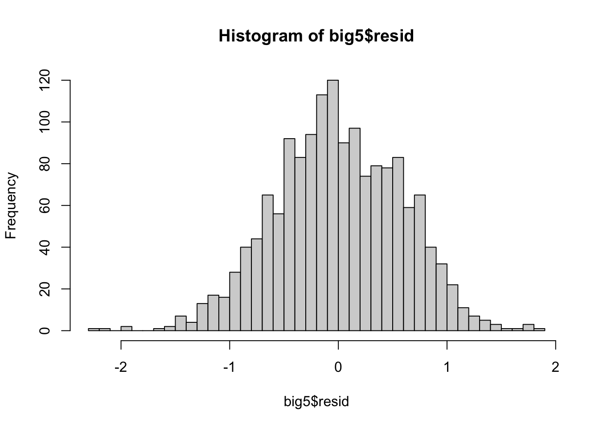
From this visualization, the distribution of the residuals seems decently normal but has a clear thicker tail to the right. However, it is very hard to tell sometimes from histograms alone, so we can turn to a much better form of visualization in a QQ-plot.
QQ-Plots
QQ-plots depict the distribution of residuals in terms of where they are in a distribution and where they should be if they were perfectly normal. This lets us see a very objective measure of how non-normal the residuals are, where non-normality occurs, and what type of non-normality it is.
Use qqnorm() and qqline() to construct the QQ-plot of the residuals.
qqnorm(big5$resid)
qqline(big5$resid)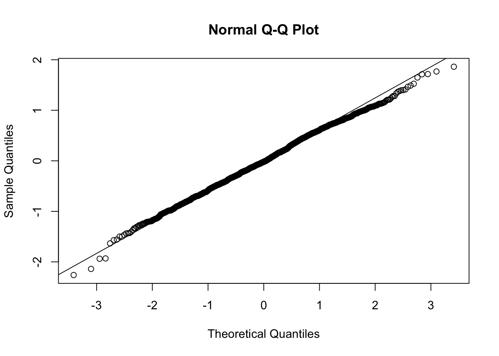
In a perfect world, the points on the QQ-plot would lie directly on the line. Any deviation from the line means some amount of deviation from normality. If the residual point is below the line, the residual is further to the left on the distribution than where it should be if it was perfectly normal. If the point is above the line, the residual is further to the right.
From the QQ-plot: looking at the lowest residuals furthest to the left on the X-axis, we can see that they are below the line. Therefore these residuals are further out to the left on the distribution, meaning that they are more extreme than we would like. Aka, the left tail is thick. Looking at the right side, since we see the points below the line, this means the right side of the distribution is further to the left than what we would like. This means there is less volume in the right tail, which makes it a thin tail.
This brings up a common issue: do not confuse long tails in distributions with “thin” tails just because they look skinny. If you go back to the histogram, you might be tempted to say the left side is thin because it looks skinny, but it is actually fat because there are more points in it than what a true normal distribution should have.
Going back to the QQ-plot, the center of the distribution is very consistent with the line, so there are not that many deviations from normality. I would say that our residual distribution is perfectly normal. In fact, the QQ-plot has to start to look pretty egregious for the non-normality to start becoming an issue. If you are ever on the “maybe it is maybe it is not ok” stance, the QQ-plot is most likely ok.
You can also plot QQ-plots with ggplot() if you want more custom graphics.
ggplot(data.frame(r = big5$resid), aes(sample = r)) +
stat_qq() +
stat_qq_line()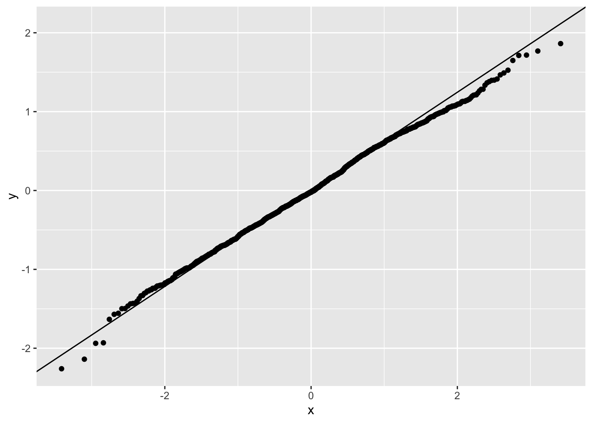
Normality Violations
If you have violations of normality, you can consider a few options.
One is a logarithmic transformation, where you take the natural log of your variable. This is very common for certain types of variables like income, which are naturally non-normal.
model2 <- lm(log(ExistentialWellBeing) ~ OpenMindedness + Conscientiousness +
Extraversion + Agreeableness + NegativeEmotionality, data = big5)
summary(model2)
Call:
lm(formula = log(ExistentialWellBeing) ~ OpenMindedness + Conscientiousness +
Extraversion + Agreeableness + NegativeEmotionality, data = big5)
Residuals:
Min 1Q Median 3Q Max
-0.8725 -0.1196 0.0175 0.1509 0.5706
Coefficients:
Estimate Std. Error t value Pr(>|t|)
(Intercept) 1.317606 0.058625 22.475 < 2e-16 ***
OpenMindedness -0.013032 0.009450 -1.379 0.1681
Conscientiousness 0.042460 0.009310 4.561 5.5e-06 ***
Extraversion 0.017953 0.009200 1.952 0.0512 .
Agreeableness 0.023980 0.010638 2.254 0.0243 *
NegativeEmotionality -0.156906 0.007702 -20.372 < 2e-16 ***
---
Signif. codes: 0 '***' 0.001 '**' 0.01 '*' 0.05 '.' 0.1 ' ' 1
Residual standard error: 0.2081 on 1544 degrees of freedom
Multiple R-squared: 0.3744, Adjusted R-squared: 0.3724
F-statistic: 184.8 on 5 and 1544 DF, p-value: < 2.2e-16Just keep in mind that all interpretations are then in LOG-units of the outcome. These coefficients are essentially percentage changes of the outcome. If you want to transform the slope to get the exact percent change of Y, use the equation \(\%\Delta Y = (e^{b_1} - 1) \times 100\).
(exp(-.013) - 1) * 100[1] -1.291586So for two individuals who differ in OpenMindedness by 1 point, the more open minded person is expected to be 1.29% lower in existential well being.
If you log-transform a predictor, you cannot simply take the exponential of the slope to back-transform. The slope now represents the change in Y for a one-unit change in \(\log(X)\), not X itself. The coefficient should be interpreted in terms of proportional or percentage changes in X.
There are other ways to handle non-normality depending on the severity. Robust standard errors work decently to handle non-normality too. Alternatively, non-normality is just not a great concern and regression is very robust to it unless non-normality is very extreme or your sample size is small.
5. Independence Assumption
Independence Assumption
The last and often least emphasized assumption is that each observation is independent of the others. This means that the value of one data point should not systematically influence or be related to another.
Violations of independence commonly occur in clustered or repeated-measures data (e.g., students within the same classroom, repeated responses from the same person, or participants from the same family). When independence is violated, standard errors are typically underestimated, which can inflate Type I error rates. Importantly, the coefficient estimates themselves are still unbiased, but our confidence in them becomes overstated.
In general, this does not tend to be a huge issue unless there is very obvious non-independence such as within-subject or natural hierarchical clustering structures.
Independence Visualization
To visualize independence, you need to plot each variable and the predicted scores against the residuals and see if there is any trend.
ggplot(data = big5, mapping = aes(x = pred, y = resid)) +
geom_point() +
geom_smooth(method = "lm", se = FALSE)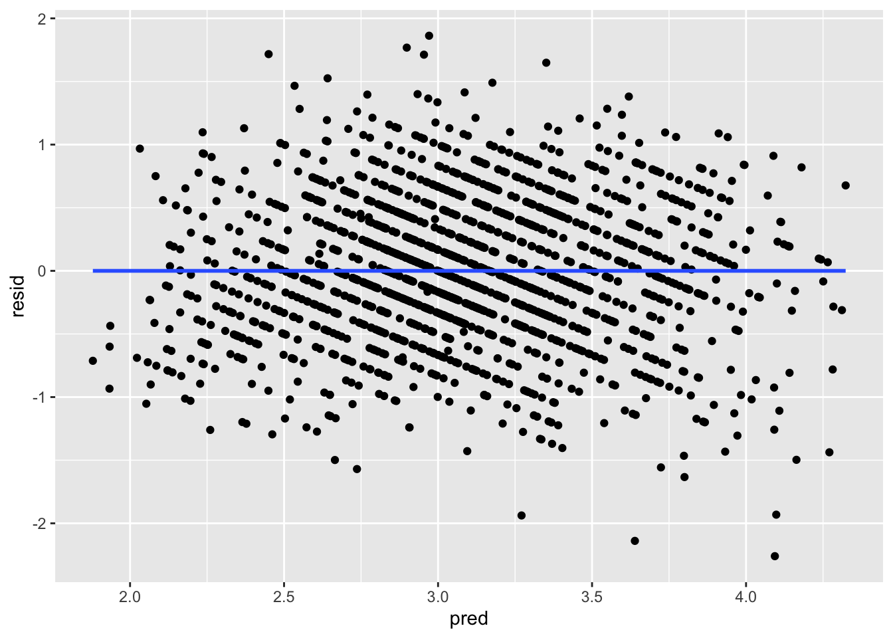
ggplot(data = big5, mapping = aes(x = OpenMindedness, y = resid)) +
geom_point() +
geom_smooth(method = "lm", se = FALSE)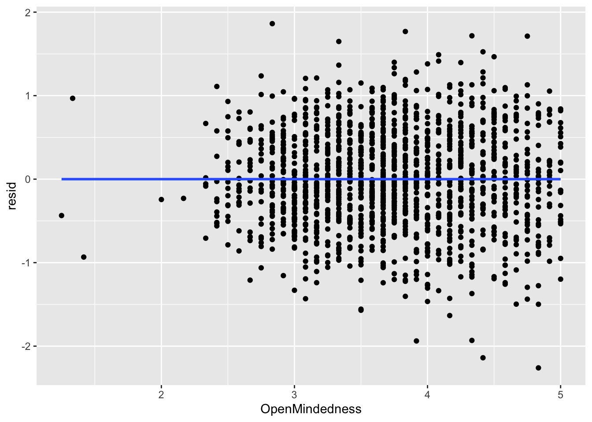
ggplot(data = big5, mapping = aes(x = Conscientiousness, y = resid)) +
geom_point() +
geom_smooth(method = "lm", se = FALSE)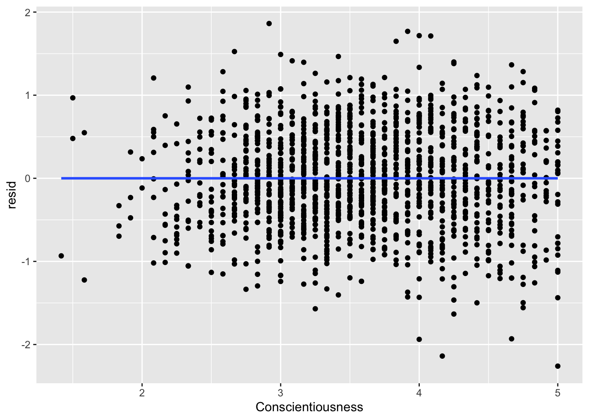
ggplot(data = big5, mapping = aes(x = Extraversion, y = resid)) +
geom_point() +
geom_smooth(method = "lm", se = FALSE)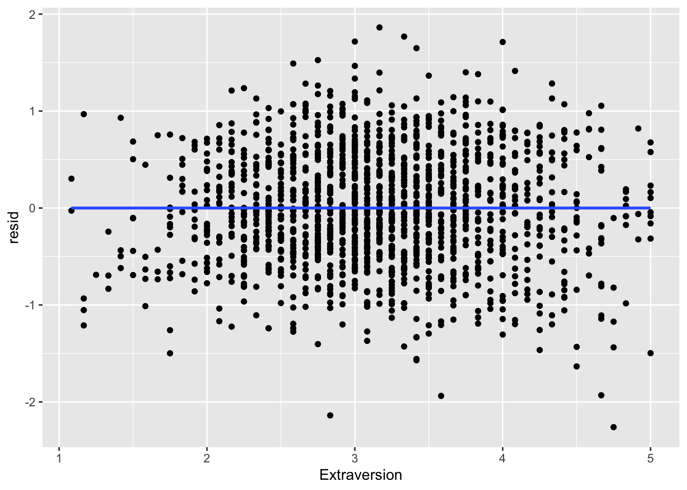
ggplot(data = big5, mapping = aes(x = Agreeableness, y = resid)) +
geom_point() +
geom_smooth(method = "lm", se = FALSE)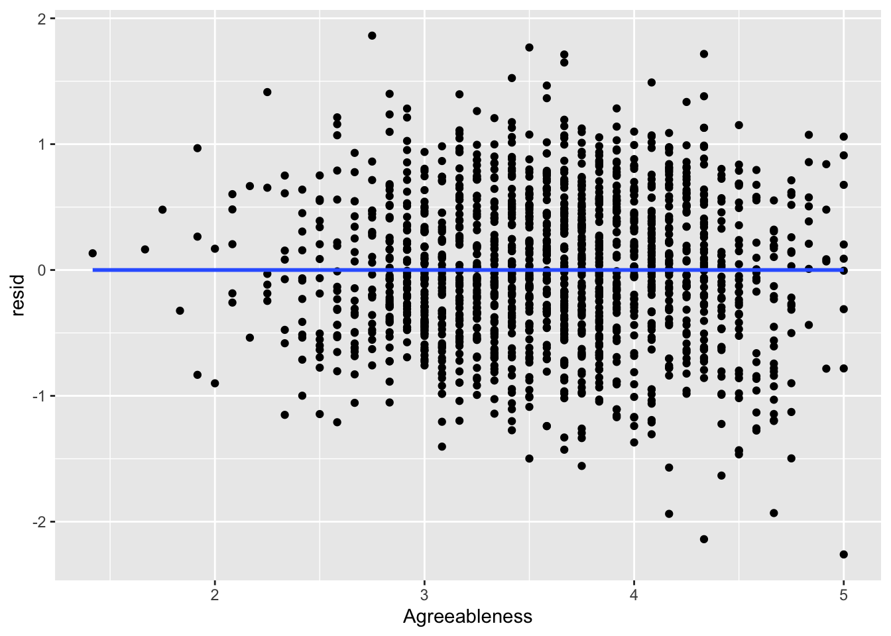
ggplot(data = big5, mapping = aes(x = NegativeEmotionality, y = resid)) +
geom_point() +
geom_smooth(method = "lm", se = FALSE)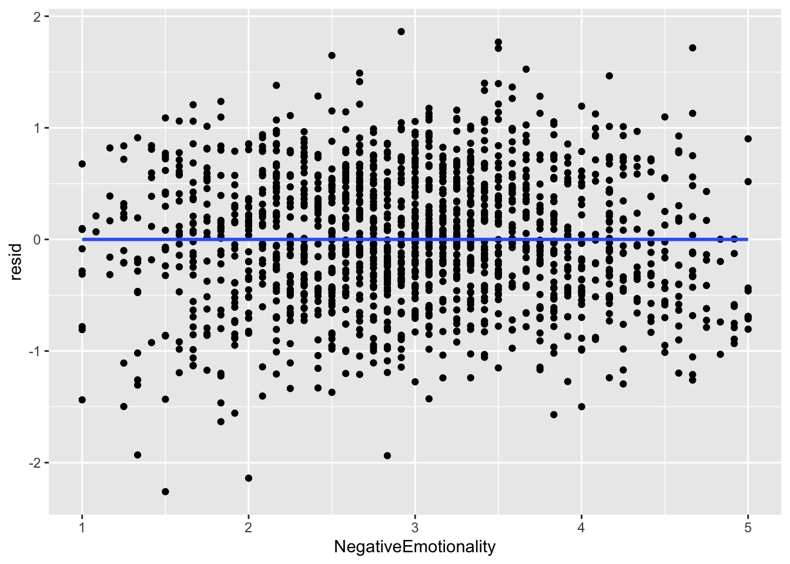
What you are looking for here is relationships between points close to each other on the X-axis. Maybe points lower on NegativeEmotionality trend further downward, which would imply there is some dependency amongst low emotionality traits. These trends, if they exist, would be very obvious. What you see in all of these plots is fine and not out of the ordinary. This is to be expected since this dataset came from a between-subject design with no natural hierarchical structure.
Independence Violation
There are many solutions to independence violations. Some methods that psychologists use are multilevel models and cluster robust standard errors. The latter pretty much works like the previous standard errors you learned about. But you should not apply these standard errors if non-independence matters for your study (e.g., if there is time-dependency or a hierarchical structure you are interested in).
6. dfBetas
dfBetas
The last diagnostic you will learn about is dfbetas, which is a measure of influential points. “Influence” is the degree to which a single data point has an effect on the size of a coefficient. The more influential a point is, the more it influences the coefficients. The “df” stands for “difference”, so it finds the influence by seeing how much the betas (slopes) change after removing data points.
Influence is a sum of distance and leverage. Distance is how far the score is from the predicted regression line (i.e., a large residual), and leverage measures how far a data point’s predictor values are from the rest of the data, indicating how much potential that point has to influence the fitted regression line.
These are the most important “outliers” you need to consider, as not every “outlier” is actually that important in the model.
A way to quantify the influence of each point is to calculate dfbetas. These are the degree to which each model coefficient changes when you remove a point from the dataset. Removing an influential point will change each coefficient by a lot, whereas removing a non-influential point will probably not change the coefficients that much.
dfbeta with Base R
R has two built-in dfbeta functions: dfbeta() and dfbetas(). To get the dfbetas of each coefficient, you need to use dfbeta(). DO NOT use dfbetas() with the “s” after “dfbeta.” That added “s” represents “standardized.” So dfbeta() gets you the regular dfbetas, while dfbetas() gets you the standardized dfbetas. You want the former not the latter.
Every year someone makes this mistake, so please keep this in mind.
dfb <- dfbeta(model1)
head(dfb) (Intercept) OpenMindedness Conscientiousness Extraversion Agreeableness
1 -0.0020912279 1.724228e-04 0.0001477245 -2.038699e-05 0.0001197938
2 0.0049027186 6.172312e-04 0.0016122448 -1.939611e-03 -0.0013121057
3 -0.0010883449 -2.766253e-04 -0.0003441153 3.199285e-04 0.0002882936
4 -0.0037966345 4.016185e-05 -0.0001462671 1.939476e-04 0.0008062994
5 -0.0036134227 2.935881e-04 0.0001647209 7.313304e-05 0.0002239914
6 0.0002020531 3.775922e-04 0.0005575361 -1.985905e-04 -0.0007539951
NegativeEmotionality
1 1.508927e-04
2 -5.912969e-04
3 3.880223e-04
4 6.384447e-05
5 2.157109e-04
6 -5.245539e-05As an example for interpretation, the dfbeta for OpenMindedness for the first row is \(1.72 \times 10^{-4}\), which means that the slope of OpenMindedness would increase by \(1.72 \times 10^{-4}\) if the first individual was removed. This is very tiny, which means individual 1 is really not that influential.
These values are not that helpful by themselves. You want to find the highest in magnitude (regardless of sign) and figure out what individual is attached to them. Here is some code that finds the most influential case per coefficient.
dfb_std <- dfbetas(model1)
cases <- apply(dfb_std, 2, function(x) which.max(abs(x)))
values <- apply(dfb_std, 2, function(x) x[which.max(abs(x))])
data.frame(Predictor = names(cases), Case = cases, DFBETA = values) Predictor Case DFBETA
(Intercept) (Intercept) 1424 -0.1873213
OpenMindedness OpenMindedness 893 -0.1563808
Conscientiousness Conscientiousness 1186 0.2229095
Extraversion Extraversion 893 0.1821125
Agreeableness Agreeableness 1432 -0.1644367
NegativeEmotionality NegativeEmotionality 1424 0.1895763We can see that for OpenMindedness, individual 893 had the largest dfbeta magnitude with a value of -.0041. This means that the slope of OpenMindedness would decrease by .0041 if we removed individual 893.
This may seem small on the surface, but you need to keep in mind how many standard errors of change this is. The standard error of the slope of OpenMindedness is .0265.
.0041 / .0265[1] 0.154717So removing individual 893 would decrease the slope by about .15 standard errors, which is not that much.
There is no metric for how much influence is too influential. It is a subjective judgement. The recommendation is not to remove points regardless of influence unless they are clear data entry errors.
dfbeta Plots
These plots are not necessary, but can give you some visual context of how many notable influential points exist per coefficient. The further from the center the point is on the histogram, the more influential the point is.
hist(dfb[, 1], breaks = 50) # intercept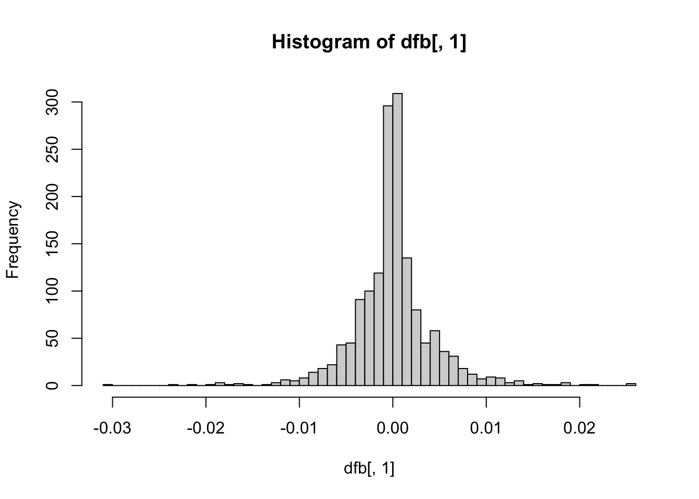
hist(dfb[, 2], breaks = 50) # OpenMindedness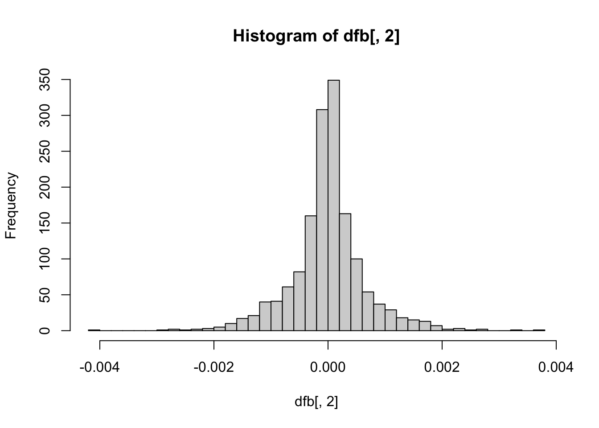
hist(dfb[, 3], breaks = 50) # Conscientiousness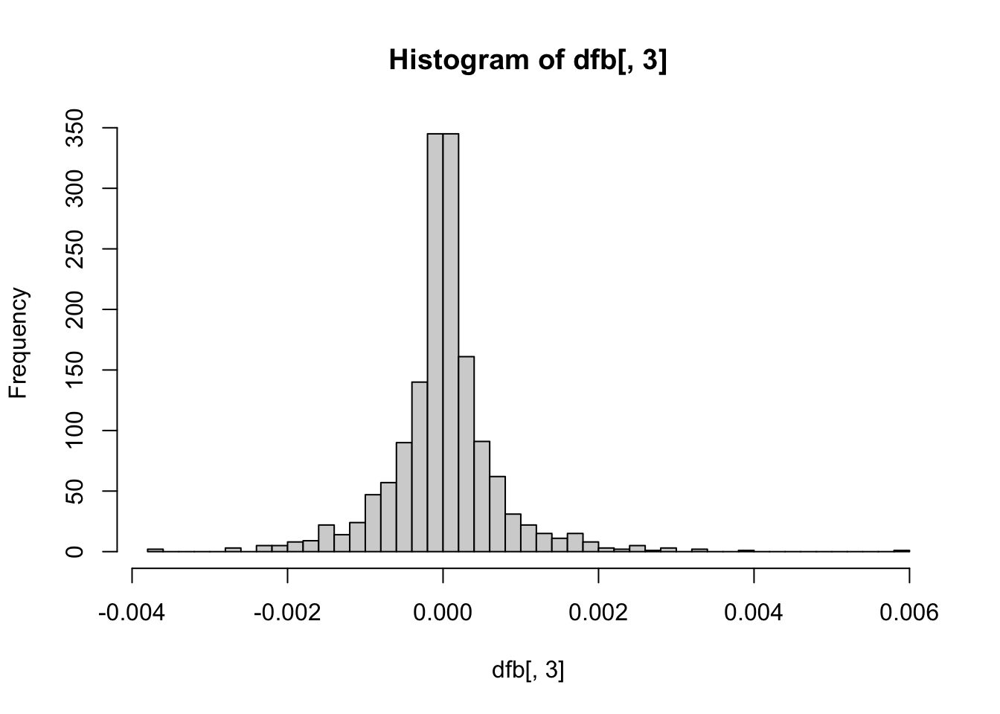
hist(dfb[, 4], breaks = 50) # Extraversion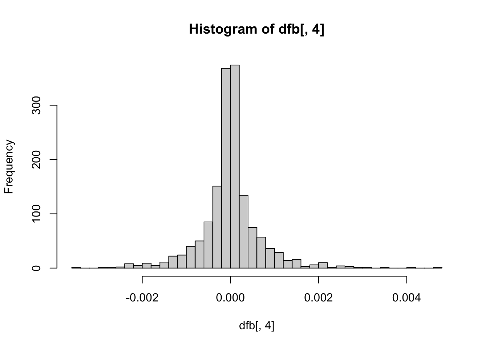
hist(dfb[, 5], breaks = 50) # Agreeableness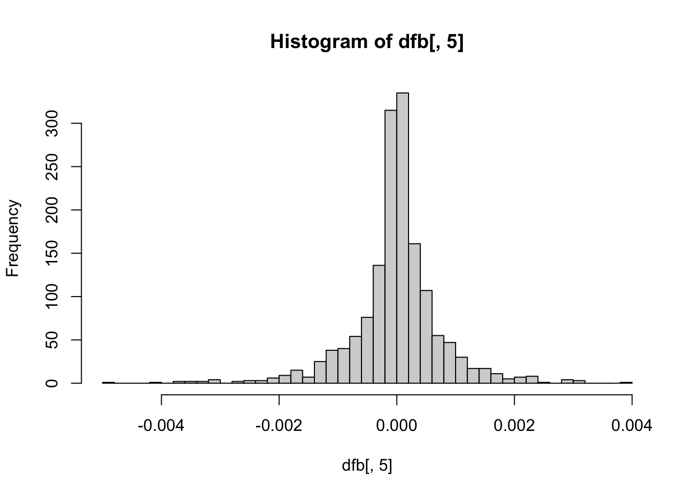
hist(dfb[, 6], breaks = 50) # NegativeEmotionality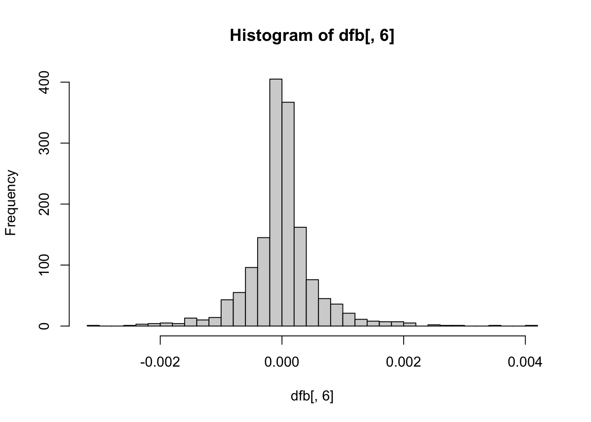
If you want, you can also plot each point with the case number attached to identify which individual is where on the scatter plots.
big5$casenum <- 1:nrow(big5)
ggplot(aes(x = OpenMindedness, y = ExistentialWellBeing), data = big5) +
geom_text(aes(label = casenum), size = 3)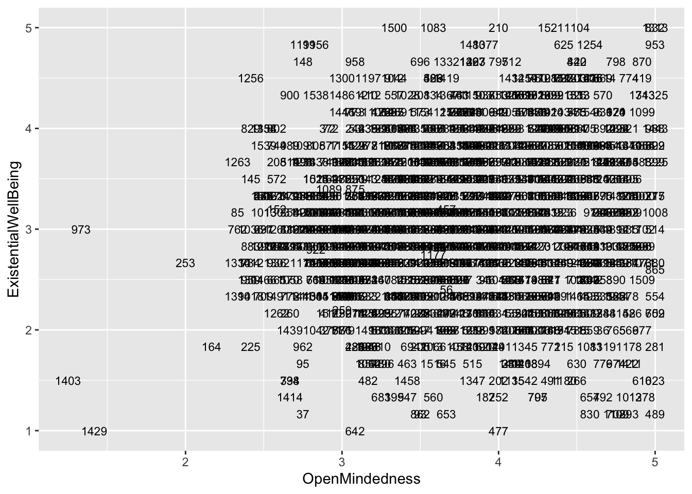
ggplot(aes(x = Conscientiousness, y = ExistentialWellBeing), data = big5) +
geom_text(aes(label = casenum), size = 3)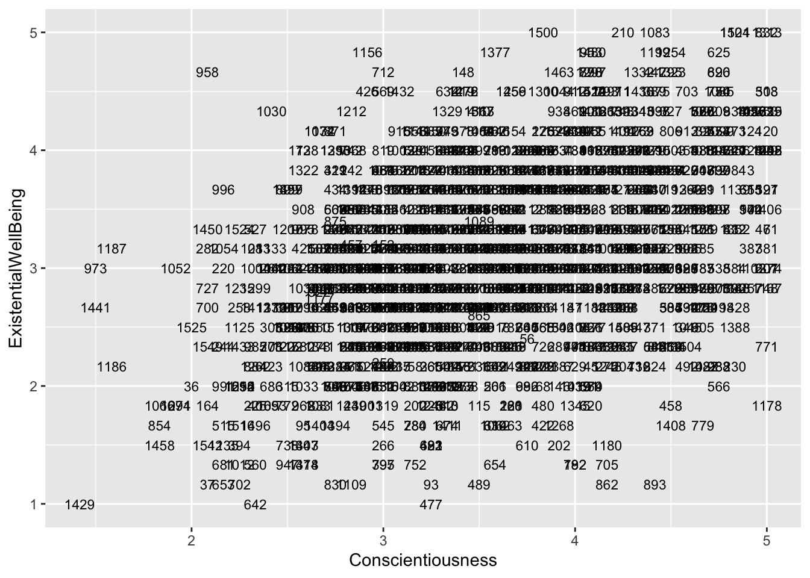
ggplot(aes(x = Extraversion, y = ExistentialWellBeing), data = big5) +
geom_text(aes(label = casenum), size = 3)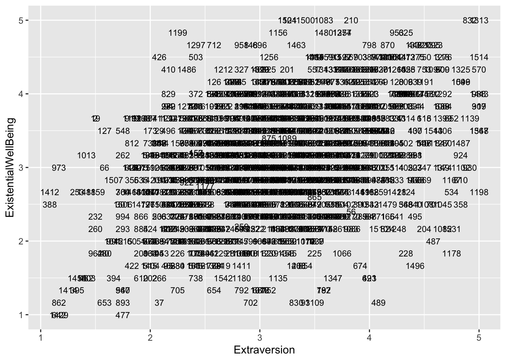
ggplot(aes(x = Agreeableness, y = ExistentialWellBeing), data = big5) +
geom_text(aes(label = casenum), size = 3)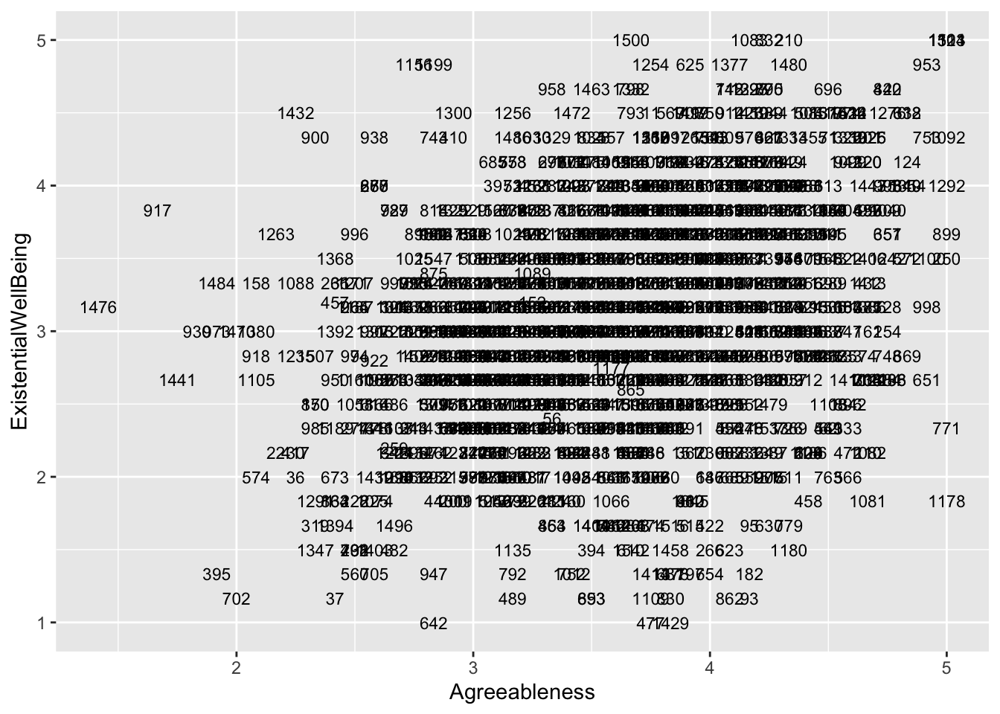
ggplot(aes(x = NegativeEmotionality, y = ExistentialWellBeing), data = big5) +
geom_text(aes(label = casenum), size = 3)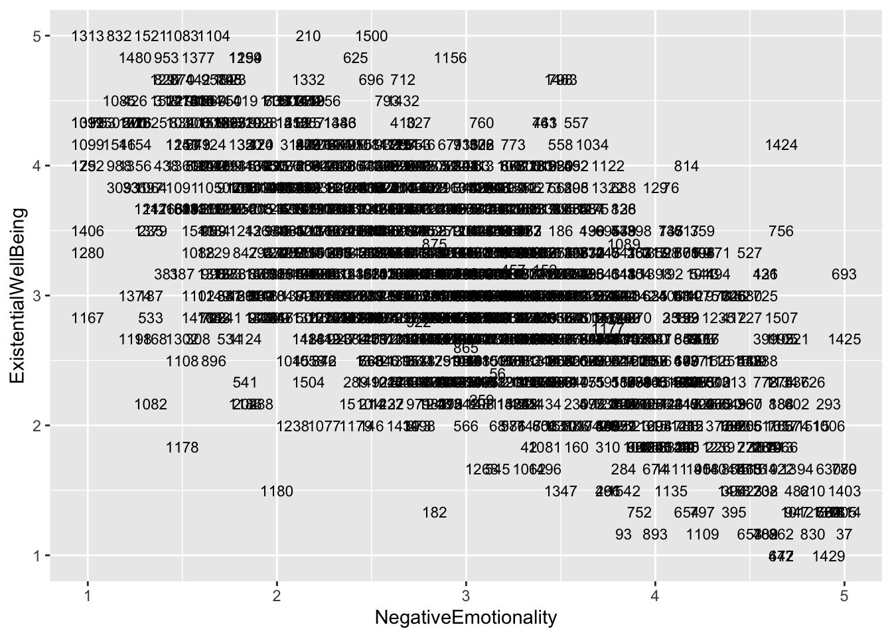
Well Done!
You have completed the Regression Diagnostics tutorial. Here is a summary of what was covered:
- The four assumptions of linear regression in order of importance: linearity, homoskedasticity, normality, and independence
- Checking linearity with residual vs predicted score plots and residual vs predictor plots
- Checking homoskedasticity with residual vs predicted score plots
- Robust standard errors with
coeftest()andvcovHC()using HC2 correction - Bootstrapped standard errors with
model_parameters()and by hand with aforloop - Checking normality with histograms and QQ-plots using
qqnorm()andqqline() - Log transformations for normality violations and how to interpret log-transformed coefficients
- Checking independence with residual vs predictor plots with a regression line
- dfbetas with
dfbeta()and how to find the most influential cases
The next lesson covers logistic regression.